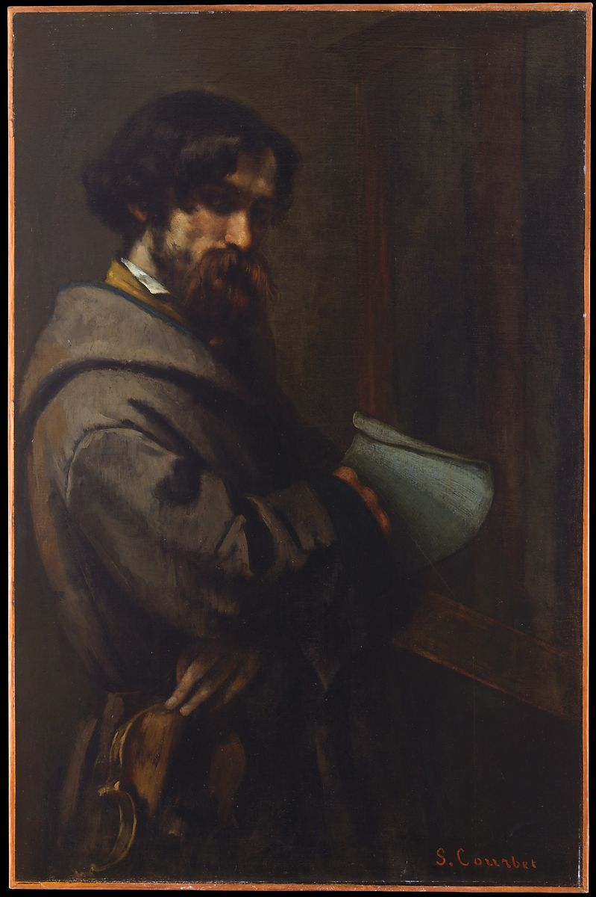

<head>
<meta charset="UTF-8" />
<meta name="keywords" content="drawing, painting" />
<meta name="description" content="drawings by Sunjy" />
<title>Sunjy</title>
<link rel="shortcut icon" type="image/x-icon" href="../../mImages/mCommon/favicon.ico" media="screen" />
<link rel="stylesheet" type="text/css" href="../../mCsses/mCommon/mCssA.css" />
<link rel="stylesheet" type="text/css" href="../../mCsses/mCommon/mCssB.css" />
<link rel="stylesheet" type="text/css" href="../../mCsses/mCommon/mCssC.css" />
<link rel="stylesheet" type="text/css" href="../../mCsses/mCommon/mCssD.css" />
<link rel="stylesheet" type="text/css" href="../../mCsses/mContent/mCssA.css" />
<link rel="stylesheet" type="text/css" href="../../mCsses/mContent/mCssB.css" />
<link rel="stylesheet" type="text/css" href="../../mCsses/mContent/mCssC.css" />
<link rel="stylesheet" type="text/css" href="../../mCsses/mContent/mCssD.css" />
</head>
<script type="text/javascript" src="../../mScripts/mContent/mContentAA.js" /></script>
<script type="text/javascript" src="../../mScripts/mContent/mContentAB.js" /></script>
<script type="text/javascript" src="../../mScripts/mContent/mContentAC.js" /></script>
<script type="text/javascript" src="../../mScripts/mContent/mContentAD.js" /></script>
<script type="text/javascript"></script> 
<script type="text/javascript">
document.write('<div class="mImgAbsolute"></div>');
/*
document.write('<p class="mFontSizeBColor" />From a white paper...</p>');
document.write('<table class="center"><tr><td>');
document.write('');
document.write('</td></tr></table>');
*/
</script>


<script type="text/javascript">
document.write('<p class="mFontSizeBColor" />Alphonse Promayet</p>');
document.write('<p class="mFontSizeSColor" />By Gustave Courbet, 1851. Promayet, a violinist who was a childhood friend and schoolmate of Courbet&#39;s, appears in several paintings by the artist. Here, he holds his instrument while adopting a soulful expression befitting a struggling musician. This picture served as the model for Promayet&#39;s likeness in <i>The Painter’s Studio of 1855</i> (Musée d&#39;Orsay, Paris). Courbet borrowed it back from the sitter, as he did many other portraits used for the life-size canvas.</p>');
document.write('<table class="center" /><tr><td>');
document.write('The Painter’s Studio of 1855</i> (Musée d&#39;Orsay, Paris). Courbet borrowed it back from the sitter, as he did many other portraits used for the life-size canvas." />');
document.write('</td></tr></table>');
</script>


